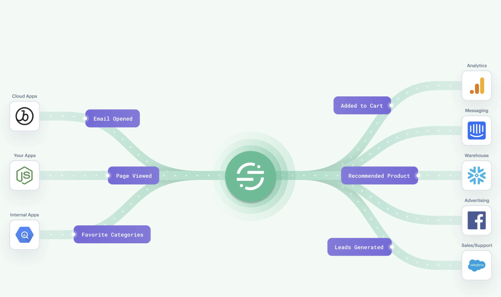
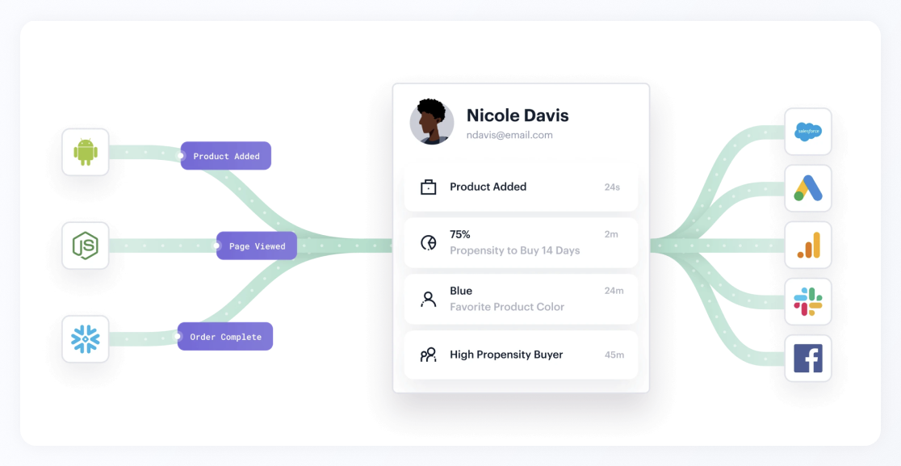
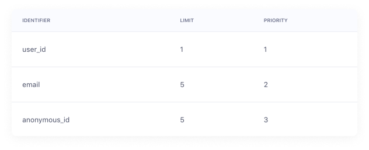

Context
Segment is a customer data platform: it helps businesses collect, unify and activate their customer data. Profiles is its flagship product. An identity resolution system follows every interaction across a customer's journey and merges them into one unified, real-time profile.
In 2023 the Profiles team's mission was to build rich, trusted profiles everywhere, and "Golden Profiles" was the company's top priority. But trust was exactly what was missing.


75% of Profiles support tickets were about profile observability and repair.
About one in eight of those tickets was escalated to engineering, and 46% of issues were about data missing from profiles. Observability was reported as the product's biggest gap, affecting customers worth $17.9M in annual recurring revenue.
I joined in March 2023, after discovery research and the PRD were done, as the only designer alongside a product manager and four engineers. I owned the flows, wireframes and research prototypes through to high-fidelity designs, ran the usability testing, and worked through edge cases and design QA with engineering.
Research
A UX researcher had already interviewed internal solution engineers and customers about how aware they were of their data quality, how they thought about partially usable profiles, and where observability hurt. I built on that work, and three findings shaped everything that followed.
People didn't know their data was unhealthy
Awareness of profile data quality was low. The customers who understood it best were the ones who had already suffered a catastrophic failure, and their only fix had been to start over.
"I was not aware that you can actually break a profile to a point that you cannot do anything with it… I got an answer that I did a change that basically broke all our profiles and they're now unusable."
Systems manager at an enterprise customer
The system was rigid, and mistakes were expensive
Identity resolution has to be set up carefully. Each identifier has limits and priorities, and any change needs safeguards, because a bad change can quietly erode customers' trust.


Profiles were a black box
Customers couldn't identify or fix even the most common issues. Bad merges usually came from upstream mistakes in their own tracking code, but they had no way to tell a Segment bug from a problem in their data.
"Data inconsistencies are not exactly the fault of Segment, but the implementation within our web platform, but that's always a little bit hard to pinpoint."
Product manager, martech and media, at an enterprise customer
Framing the problem
We designed for two people. Our primary users were data engineers, who need to find data issues and work out why profiles or identity resolution aren't behaving as expected. Our secondary users were business users, who want overall profile metrics to justify the investment in Segment. With limited time, we chose to prioritize troubleshooting.
From the data engineer's side, the problem looked like this:
"When I notice data issues, I want to troubleshoot what went wrong and fix them myself, so I can trust Segment's data to power my personalized communications. Today I have no visibility into what caused them. All I can do is file a ticket or get my Segment rep on a call."
How might we make data operators feel confident identifying and troubleshooting data quality issues on their own?
Designing and testing
I explored two complementary ideas. An overview would summarize how the profile system was performing, so teams could spot problems early. Logs would surface every error, violation and success, so engineers could trace a problem to its cause.
I tested both with customers and with Twilio's support and solutions teams. The reaction to the logs was immediate:
"We are going from flying blind, no visibility whatsoever and very high cost of actually finding the issues, to having at least some understanding of what's going wrong. In whatever form you're shipping it, I want to be first in line!"
Data engineer at an enterprise customer
What changed in the logs
The table and its side sheet matched how people troubleshoot. But a wall of violations read as alarming, even though violations are expected behaviour. People also needed to search by message ID, not only external ID, and success logs added noise mid-investigation.
- Dropped the warning icon from violations and explained errors and violations in context
- Added search by message ID
- Moved success logs to their own tab
- Added an audit trail of identity resolution changes, so errors can be traced to the change that caused them

What changed in the overview
The overview's metrics and trends helped people gauge the health of their space. But the top errors and their causes lived in separate places, and a high violation rate could scare non-technical users. As one solutions engineering manager put it, the page was "missing the positive growth data". So I combined errors, violations and their causes into one chart, removed the events pie chart, and led with profile growth instead.


Getting the details right
One search bar for two kinds of search
People wanted to search logs by message ID and by external ID. Message IDs can be searched directly, but an external ID only makes sense once you've picked its type, and that type also had to work as a filter on its own. The question was how one search bar could support a search that needs a filter and one that doesn't.


A side sheet you can scan
Each error or violation opens a side sheet. Over three rounds it became a table of only the relevant details, led by a plain-language explanation and a recommended next step.


The final design
Profiles Insights shipped to private beta in July 2023 with an overview, errors and violations, success logs, an audit trail, and an email digest of profile health.


Impact
20% fewer profile-observability tickets after launch.
Support and Solutions Engineers became heavy users of Profiles Insights, and escalations to engineers over Slack dropped noticeably.
What I learned
My whole team was based in India. I learned to work well asynchronously, with recorded walkthroughs and clear documentation, cutting down on meetings while keeping everyone unblocked and aligned.